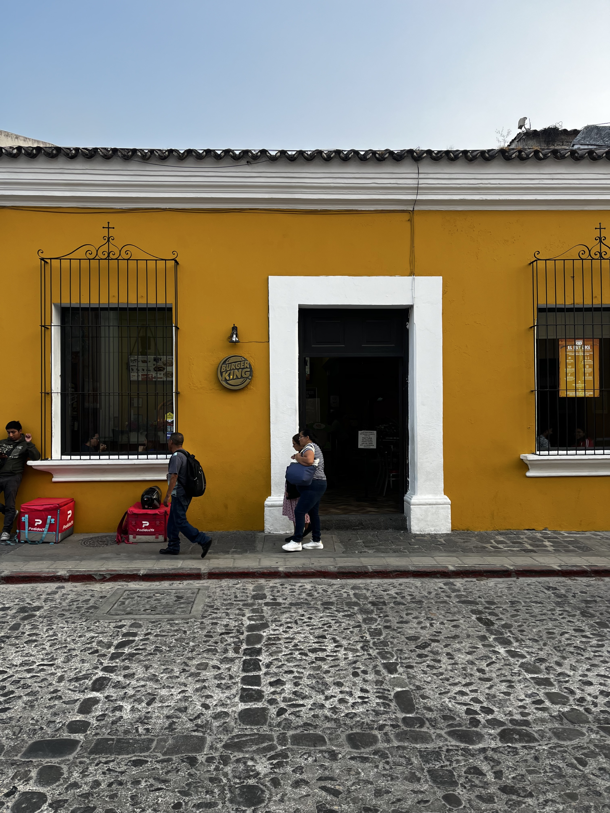
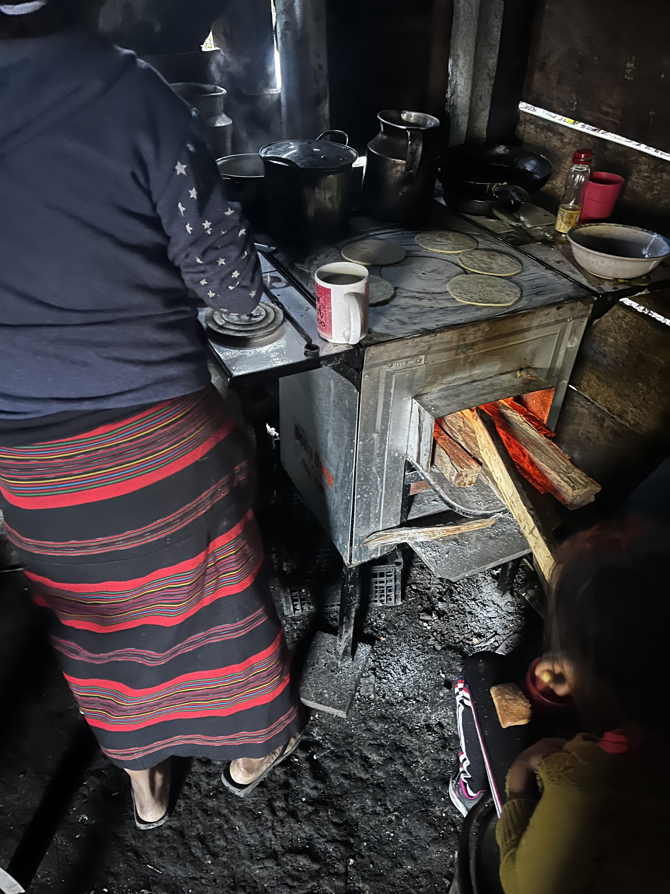
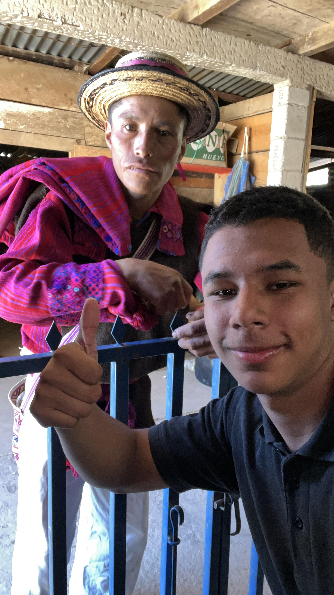

Turismo colonial: la estética del silencio
En comunidades como San Juan Atitán, los idiomas como el Mam siguen vivos, pero el turismo en Guatemala promueve una imagen colonial como si esa fuera su única identidad nacional. Antigua Guatemala es el símbolo perfecto de esta contradicción: calles empedradas, iglesias restauradas y edificios con arquitectura española colonial son exaltados como patrimonio sin problematizar su origen violento. La lectura de Maldonado-Torres sobre la “colonialidad del ser” nos ayuda a entender cómo esta estética esconde la continuidad del silenciamiento a los pueblos originarios.


Colonialidad del poder: ¿quién define la identidad guatemalteca?
El concepto de colonialidad del poder, como lo define Aníbal Quijano, permite analizar cómo las estructuras de poder impuestas desde la colonización siguen presentes. En Guatemala, esto se evidencia en cómo se exalta lo colonial como símbolo nacional, desplazando los elementos indígenas a lo artesanal o folclórico. El Estado y el mercado turístico legitiman una narrativa donde lo indígena es accesorio. En cambio, la historia y los saberes mayas continúan siendo marginalizados, aunque estén vivos en comunidades como San Juan Atitán.
 Etnicidad sin garantías: lo indígena como adorno
Stuart Hall nos habla de una “etnicidad sin garantías”, un reconocimiento superficial que no transforma relaciones de poder. En San Juan Atitán, el idioma Mam se mantiene vivo, la vestimenta tradicional aún se teje, y la cocina comunitaria persiste. Sin embargo, estos elementos no tienen presencia en las narrativas oficiales del turismo nacional. La riqueza lingüística, textil y gastronómica es invisibilizada mientras se vende una Guatemala “colonial y pintoresca”.
El traje típico como resistencia cotidiana
A diferencia de los souvenirs, el traje típico en San Juan Atitán no es una mercancía, sino una práctica viva. Tejer, portar y transmitir estos diseños son actos de memoria y resistencia cultural. A través de las imágenes podemos ver cómo el textil no solo identifica, sino que narra historias. Las mujeres continúan con los telares de cintura, y los trajes reflejan identidad comunitaria. Esta página cierra la revista mostrando cómo, incluso en contextos de exclusión, la etnicidad se sostiene en lo cotidiano.